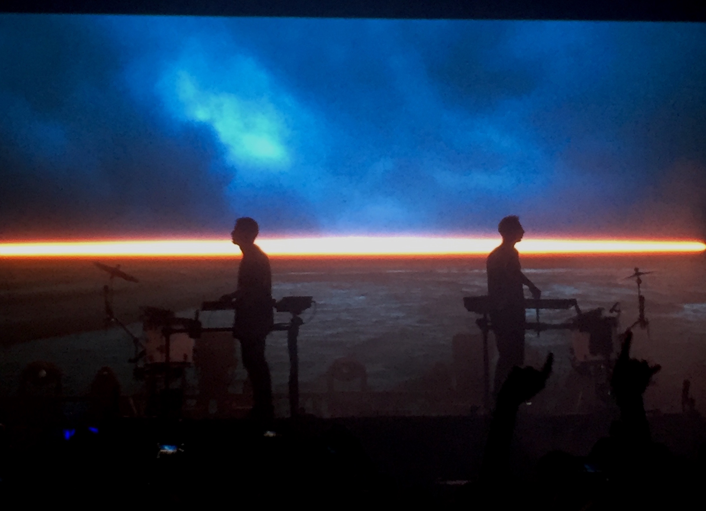
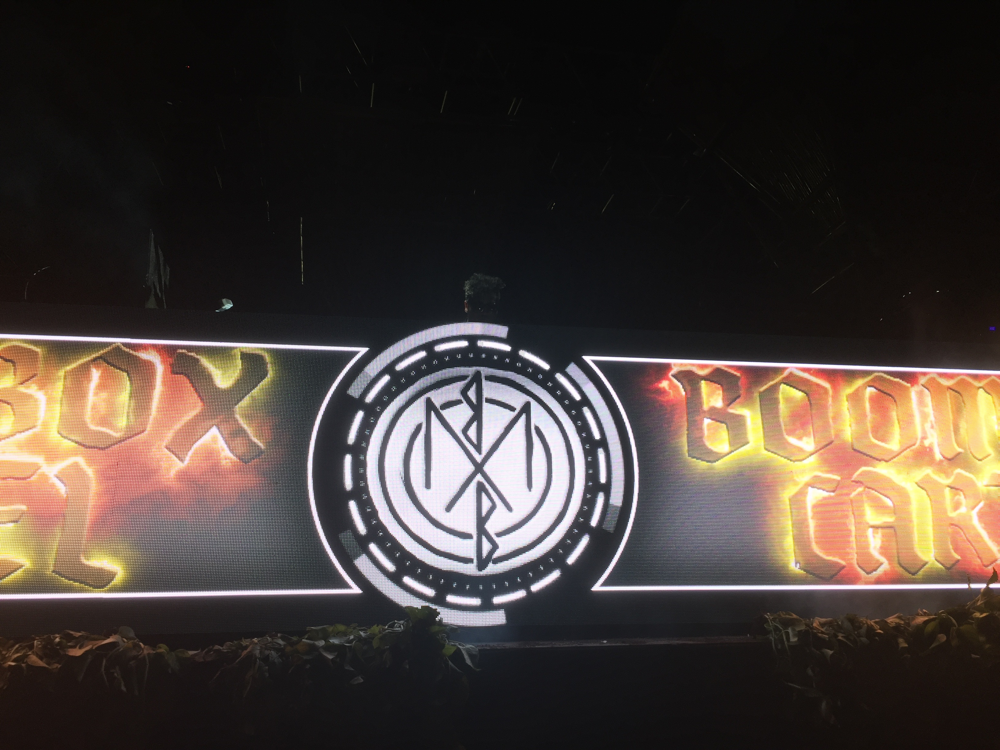
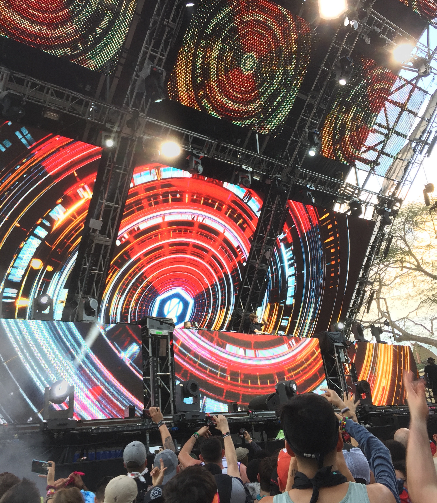

TOP ARTISTS
1. Odesza

Short bio: Odesza is an electronic music duo consisting of Harrison Mills and Clayton Knight from Seattle. They met in college at Western Washington University and began producing beats together their senior year. Their style is unique due to the use of sampling and sound manipulation. Their latest album “A Moment Apart” was their first album released in over 2 years, and has them touring nationwide.
Where I saw them perform: The Electric Factory, Philadelphia, PA
Why this artist made my list: Odesza has a very unique, bright, upbeat sound attributed from their atmosphere living in Seattle. They talk about how they couldn’t imagine making music in any other setting. Their lyrics in combination with their unique production and bright synth sounds creates a bone-chilling sound that I love listening to no matter what mood I am in.
2. Boombox Cartel

Short bio: Boombox Cartel is a duo based in Mexico consisting of Jorge Medina and Americo Garcia. They are two best friends that grew up together with a passion for music.They decided to go for their music career when they attended college for audio engineering. That is where the duo Boombox Caartel came to fruition. Their style consists of gritty synth sounds that almost sound like robot noises, at obscure pitches and tones, mixed with hard hitting 808s.
Where I saw them perform: Ultra Music Festival, Bayfront Park, FL
Why this artist made my list: Boombox Cartel’s set with very bass heavy, melodic, and kept me off-guard. I was also front row, directly in the center so being that close to a favorite artist of mine was an eye opening experience. It was the last show of the night, and I was with one of my best friends, fully emerced in the show. After being at the festival for over 9 hours, the set still brought energy out of me somehow.
3. NGHTMRE

Short bio: NGHTMRE, aka Tyler Marenyi is an American DJ and trap producer from North Carolina. He studied Business at Elon Univeristy, later to pursue his music career at the esteemed Icon Collective music production school in LA. There Tyler created a new sound called “future bass”, which really took off and gained a massive following for other producers to emulate.
Where I saw them perform: Ultra Music Festival, Bayfront Park, FL
Why this artist made my list: NGHTMRE is a huge influence to me in why I started producing electronic music. I watched many interviews by him and producer sessions where he walked through a lot of what he does and I learned a lot of great production tips from him that I still use today. His show was also heavy-hitting, and I got to hear some of my favorite songs by him live with my friends. Great to finally see him live.
You can listen to some of these artist's songs below.